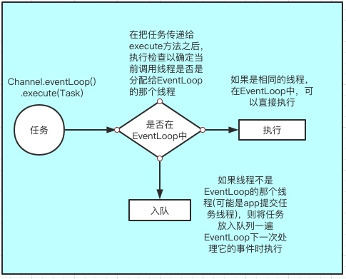

Netty是什么？
Netty 是JBOSS 提供的一个java开源框架，它提供异步的、事件驱动的网络应用程序和工具，用以快速开发高性能、高可靠性的网络服务器和客户端程序。
为什么使用Netty
有以下几点致使我们去使用 Netty：
- JAVA NIO 异步框架虽然提供了多路复用 IO 的支持，但是没有提供上层的 “信息格式” 的封装。例如JAVA NIO没有提供针对JSON、protocol这些信息的封装。
- NIO的类库和API比较复杂，学习成本很高，需要熟练的掌握 Selector、ByteBuffer、ServerSocketChannel、SocketChannel等组件，要能正常使用 NIO 需要了解 NIO涉及到的 Reactor线程模型、多线程、网络编程等技能的支持。
- 要编写一个可靠的、已维护的、高可用的NIO服务器应用，除了框架本身要兼容实现各类操作系统之外，更重要的是它还要处理很多长层特有的服务，例如客户端权限、信息格式的封装、数据读取、断线重连、半包读写、心跳机制等，这些是 Netty 提供了相应的支持。
- JAVA NIO 框架存在一个 poll/epoll 的bug： Selector 不能在 Selector.select(timeout) 上 阻塞，这也就意味着CPU资源占用率会达到 100%（linux内核上，JDK1.7 以及之前的版本会重现）
Netty 为什么要使用 NIO 而不是 AIO
Netty 不看重 Windows 上的使用，在 Linux 系统上，AIO 的底层实现仍使用 EPOLL，没有很好实现 AIO，因此在性能上没有明显的优势，而且被 JDK 封装了一层不容易深度优化。
AIO 还有个缺点是接收数据需要预先分配缓存, 而不是 NIO 那种需要接收时才需要分配缓存, 所以对连接数量非常大但流量小的情况, 内存浪费很多。
Netty核心组件初步了解
- EventLoop、EventLoopGroup
EventLoop：可以看做是一个线程、EventLoopGroup可以看做是线程组。
- Channel
Channel 是java NIO的一个基本组件，它代表一个实体(如硬件设备、文件、网络套接字等)的开放连接，可以将它看做是入站或出站的数据载体，可以被打开或者别关闭
- 事件和ChannelHandler、ChannelPipeline
事件: Netty事件可依据他们是入站还是出站的数据流进行划分
ChannelHandler: 处理或拦截 IO 事件，并将其转发到其ChannelPipeline下一个处理程序。
ChannelPipeline: ChannelHandler的链表容器，用于处理在该链上传播Channel入站和出站事件。
- ChannelFuture、Promise
Netty 中所有的 I/O 操作都是异步的。这两个对象可以看作是一个异步操作的结果的占位符;它将在未来的某个时刻完成，并提供对其结果的访问
EventLoop、EventLoopGroup、Channel之间的关系
- EventLoopGroup包含一个或多个EventLoop
- 一个EventLoop在他的声明周期内只和一个Thread线程绑定
- 所有的EventLoop处理的 IO 事件都将在它专有的 Thread线程上被处理
- 一个Channel 在它的生命周期内只注册一个 EventLoop
- 一个EventLoop 可能被分配各个一个或多个Channel
下面用图来说明他们之间的关系：


Channel 接口
Channel 生命周期
- ChannelRegistered : Channel 已经被注册到了 EventLoop
- ChannelActive : Channel 处于活动状态(已经连接到它的远程节点)。它现在可以接收和发送数据了
- ChannelInactive : Channel 没有连接到远程节点
- - ChannelUnregistered : Channel 从 EventLoop 中取消注册
Channel 接口中重要的方法
- eventLoop: 返回分配给 Channel 的 EventLoop
- pipeline: 返回分配给 Channel 的 ChannelPipeline
- isActive: 如果 Channel 是活动的，则返回 true。活动的意义可能依赖于底层的传输。 例如，一个 Socket 传输一旦连接到了远程节点便是活动的，而一个 Datagram 传输一旦被打开便是活动的。
- localAddress: 返回本地的 SokcetAddress
- remoteAddress: 返回远程的 SocketAddress
- write: 将数据写到远程节点。这个数据将被传递给 ChannelPipeline，并且排队直到它被冲刷
- flush: 将之前已写的数据冲刷到底层传输，如一个 Socket writeAndFlush: 一个简便的方法，等同于调用 write()并接着调用 flush()